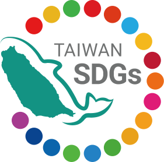
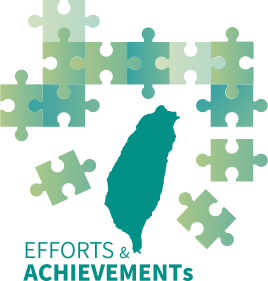
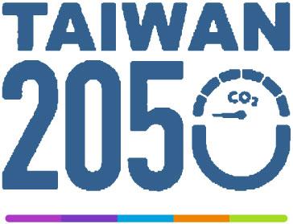
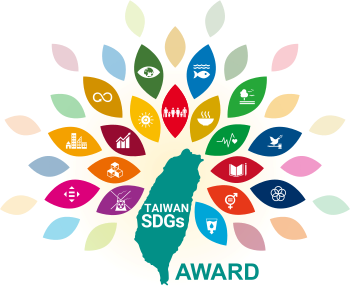

您的瀏覽器不支援JavaScript，請更換支援 JavaScript 的瀏覽器。
跳到主要內容區塊
行政院國家永續發展委員會英文版
:::
Taiwan SDGs
About NCSD
Meeting
Taiwan Sustainable Development Goals
Efforts and Achievements
Taiwan’s Voluntary National Review
Annual Report on National Sustainable Development
Policy Outcomes
Net-Zero
Taiwan SDGs Award
What is the Taiwan SDGs Award?
Result of the Taiwan SDGs Award
中
:::




Policy Outcomes
Government invests resources to strengthen maritime law enforcement
Government invests resources to strengthen maritime law enforcement
2022-10-20
Government invests resources to strengthen maritime law enforcement
The 10th Joint Conference of Taiwan and Japan on Medical Products Regulation on October 20th, 2022.
The 10th Joint Conference of Taiwan and Japan on Medical Products Regulation on October 20th, 2022.
2022-10-20
The 10th Joint Conference of Taiwan and Japan on Medical Products Regulation on October 20th, 2022.
What should we be concerned with as climate change continues to knock on our doors? ...
What should we be concerned with as climate change continues to knock on our doors? ...
2022-10-13
What should we be concerned with as climate change continues to knock on our doors? ...
Solid, Continued Progress on Eco- and Green-Port Sustainability Earn ESPO ...
Solid, Continued Progress on Eco- and Green-Port Sustainability Earn ESPO ...
2022-10-12
Solid, Continued Progress on Eco- and Green-Port Sustainability Earn ESPO ...
Taiwan and EU hold fifth Human Rights Consultation
Taiwan and EU hold fifth Human Rights Consultation
2022-10-05
Taiwan and EU hold fifth Human Rights Consultation
Showing 1 to 5 of 58 entries
Previous
1
2
3
4
5
…
12
Next
樹圖